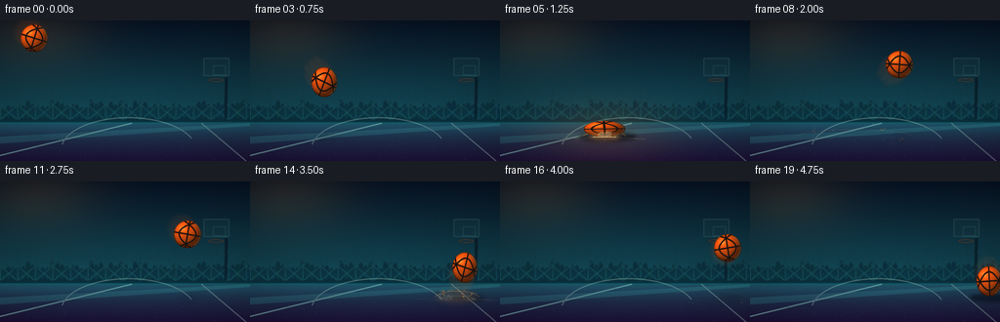
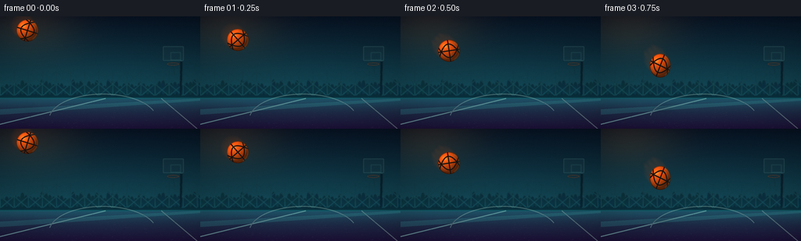
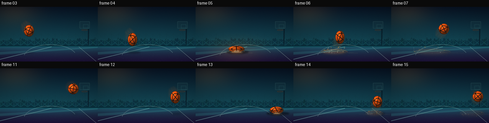

CODING AGENTS AS PIXEL WORLD MODELS
traex/GPT-5.6-Sol · phygen_027
点击播放 · 原生 RGB 像素
逐轮保存的候选
回放视频、检查图与代码变化。
每份候选均可单独播放。实际图片检查记录在下方工具轨迹中。
候选 01播放与检查图
点击播放 · 原生 RGB 像素


展开代码变化
--- 上一保存版本
+++ 本次保存版本
@@ -0,0 +1,300 @@
+from pathlib import Path
+import math
+import numpy as np
+from PIL import Image, ImageDraw, ImageFilter
+import artifact_io
+
+# PixelWorld case 027 â deterministic procedural RGB animation.
+W, H, N, FPS = 256, 144, 20, 4.0
+S = 4
+SW, SH = W*S, H*S
+ROOT = Path(__file__).resolve().parent
+rng = np.random.default_rng(2701)
+
+
+def sc(v):
+ return int(round(v*S))
+
+
+def make_background():
+ yy, xx = np.mgrid[0:SH, 0:SW]
+ yf = yy / max(1, SH-1)
+ xf = xx / max(1, SW-1)
+ horizon = 0.735
+
+ # Deep teal arena atmosphere above a colorful violet-blue court.
+ top = np.array([7, 18, 34.0])
+ lower = np.array([20, 78, 91.0])
+ q = np.minimum(yf / horizon, 1.0)[..., None]
+ sky = top*(1-q) + lower*q
+ ground_top = np.array([31, 64, 83.0])
+ ground_bottom = np.array([29, 17, 57.0])
+ gq = np.clip((yf-horizon)/(1-horizon), 0, 1)[..., None]
+ ground = ground_top*(1-gq) + ground_bottom*gq
+ arr = np.where((yf < horizon)[..., None], sky, ground)
+
+ # Warm light enters from upper-left and cool cyan light grazes the horizon.
+ glow = np.exp(-(((xf-0.14)/0.25)**2 + ((yf-0.09)/0.26)**2))
+ arr += glow[..., None] * np.array([29, 17, 4.0])
+ hglow = np.exp(-((yf-horizon)/0.075)**2)
+ arr += hglow[..., None] * np.array([0, 17, 19.0])
+
+ # Static fine-grain texture and a photographic vignette.
+ noise = rng.normal(0, 1.5, (SH, SW, 1))
+ arr += noise
+ vignette = 1.0 - 0.23*np.clip(((xf-.5)/.72)**2 + ((yf-.48)/.78)**2, 0, 1)
+ arr *= vignette[..., None]
+ base = Image.fromarray(np.uint8(np.clip(arr, 0, 255)), 'RGB')
+
+ # Distant stands/fence, deliberately softened by depth of field.
+ far = Image.new('RGBA', (SW, SH), (0, 0, 0, 0))
+ d = ImageDraw.Draw(far, 'RGBA')
+ hy = sc(104)
+ d.rectangle((0, sc(91), SW, hy), fill=(3, 18, 30, 155))
+ # Crowd/stadium blocks.
+ rr = np.random.default_rng(123)
+ for x in range(-4, 260, 5):
+ hh = int(rr.integers(3, 12))
+ col = (3, 19+int(rr.integers(0,9)), 32+int(rr.integers(0,10)), 120)
+ d.ellipse((sc(x), sc(92-hh), sc(x+5), sc(100)), fill=col)
+ # Fence uprights and wire diagonals.
+ for x in range(0, 270, 18):
+ d.line((sc(x), sc(70), sc(x), sc(101)), fill=(42, 105, 111, 55), width=sc(.55))
+ d.line((sc(x-17), sc(72), sc(x+17), sc(101)), fill=(41, 108, 110, 35), width=sc(.45))
+ d.line((sc(x+17), sc(72), sc(x-17), sc(101)), fill=(41, 108, 110, 35), width=sc(.45))
+ # Far hoop to establish the location without competing with the hero ball.
+ d.line((sc(231), sc(101), sc(232), sc(51)), fill=(5, 19, 31, 190), width=sc(2.4))
+ d.rounded_rectangle((sc(208), sc(38), sc(235), sc(57)), radius=sc(1.2),
+ fill=(24, 53, 63, 80), outline=(86, 146, 144, 95), width=sc(1))
+ d.rectangle((sc(218), sc(46), sc(231), sc(56)), outline=(69, 130, 129, 85), width=sc(.8))
+ d.ellipse((sc(213), sc(59), sc(229), sc(63)), outline=(151, 78, 43, 145), width=sc(1.2))
+ d.line((sc(221), sc(62), sc(223), sc(75)), fill=(44, 73, 76, 65), width=sc(.6))
+ far = far.filter(ImageFilter.GaussianBlur(sc(.55)))
+ base = Image.alpha_composite(base.convert('RGBA'), far)
+
+ # Court markings and surface glints, all converging toward the horizon.
+ court = Image.new('RGBA', (SW, SH), (0, 0, 0, 0))
+ d = ImageDraw.Draw(court, 'RGBA')
+ d.polygon([(0, sc(119)), (SW, sc(105)), (SW, sc(108)), (0, sc(126))], fill=(67, 203, 194, 38))
+ d.line((sc(-20), sc(143), sc(135), sc(105)), fill=(164, 239, 220, 105), width=sc(1.5))
+ d.line((sc(252), sc(144), sc(206), sc(105)), fill=(188, 225, 207, 75), width=sc(1.2))
+ d.arc((sc(62), sc(99), sc(201), sc(166)), 190, 339, fill=(177, 220, 206, 78), width=sc(1.25))
+ # tiny scratches and aggregate, strongest in the foreground
+ rr = np.random.default_rng(99)
+ for _ in range(170):
+ y = rr.uniform(108, 143)
+ x = rr.uniform(0, 256)
+ a = int(10 + 30*(y-108)/35)
+ ln = rr.uniform(.3, 2.0)
+ d.line((sc(x), sc(y), sc(x+ln), sc(y+rr.uniform(-.15,.15))),
+ fill=(148, 166, 161, a), width=max(1,sc(.25)))
+ return Image.alpha_composite(base, court)
+
+
+BACKGROUND = make_background()
+
+# Hand-tuned ballistic keyframes. The second leap is smaller, preserving momentum.
+X = np.array([35, 48, 62, 76, 91, 107, 122, 138, 153, 167,
+ 180, 192, 203, 212, 220, 227, 233, 238, 242, 245], dtype=float)
+Y = np.array([18, 30, 44, 63, 86, 111, 80, 58, 45, 39,
+ 42, 54, 76, 110, 88, 74, 68, 72, 84, 102], dtype=float)
+RX = np.full(N, 14.0)
+RY = np.full(N, 14.0)
+# High-speed stretch on approach/rebound and broad elastic compression on contact.
+RX[[3,4,6,12,14,19]] = [13.3, 12.2, 12.1, 12.7, 12.8, 13.2]
+RY[[3,4,6,12,14,19]] = [15.2, 17.3, 17.0, 16.2, 15.5, 15.3]
+RX[5], RY[5] = 21.3, 8.2
+RX[13], RY[13] = 18.1, 9.3
+
+
+def add_shadow(im, i):
+ # Height-dependent soft contact shadow anchors the ball to the court.
+ bottom = Y[i] + RY[i]
+ gap = max(0.0, 119.4-bottom)
+ closeness = math.exp(-gap/25.0)
+ cx = X[i] + 3.0
+ w = (9 + 15*closeness) * (1.25 if i in (5,13) else 1)
+ h = 1.3 + 3.2*closeness
+ lay = Image.new('RGBA', (SW,SH), (0,0,0,0))
+ d = ImageDraw.Draw(lay, 'RGBA')
+ d.ellipse((sc(cx-w),sc(119-h),sc(cx+w),sc(119+h)), fill=(0,5,13,int(35+105*closeness)))
+ lay = lay.filter(ImageFilter.GaussianBlur(sc(1.8+gap/30)))
+ return Image.alpha_composite(im, lay)
+
+
+def impact_underlay(im, i):
+ lay = Image.new('RGBA',(SW,SH),(0,0,0,0))
+ d = ImageDraw.Draw(lay,'RGBA')
+ impacts = [(5,107,1.0),(13,212,.66)]
+ for fi,cx,power in impacts:
+ age=i-fi
+ if age < 0 or age > 3: continue
+ fade=[1.0,.64,.30,.10][age]*power
+ spread=(22+age*13)*power
+ # ground-level pressure flash/contact ring
+ d.arc((sc(cx-spread),sc(116-3.6-age*.4),sc(cx+spread),sc(123+3.6+age*.4)),
+ 188,353,fill=(255,164,73,int(180*fade)),width=max(1,sc(1.0*power)))
+ d.arc((sc(cx-spread*.68),sc(117),sc(cx+spread*.68),sc(122.5)),
+ 184,356,fill=(126,242,225,int(120*fade)),width=max(1,sc(.65)))
+ # Radiating floor streaks communicate force along the rigid surface.
+ for k in range(11):
+ ang = math.radians(4 + 172*k/10)
+ sx = cx + math.cos(ang)*(10+age*5)*power
+ sy = 119.5 + math.sin(ang)*1.2
+ ex = cx + math.cos(ang)*(24+age*12)*(0.8+0.35*((k*7)%5))*power
+ ey = 119.5 + math.sin(ang)*(3.0+age*.6)
+ d.line((sc(sx),sc(sy),sc(ex),sc(ey)),fill=(224,181,116,int((80+(k%3)*18)*fade)),width=max(1,sc(.45)))
+ return Image.alpha_composite(im,lay)
+
+
+def add_motion_blur(im, i):
+ if i == 0:
+ vx,vy=12,12
+ else:
+ vx,vy=X[i]-X[i-1],Y[i]-Y[i-1]
+ speed=math.hypot(vx,vy)
+ if speed < 8 or i in (5,13): return im
+ layer=Image.new('RGBA',(SW,SH),(0,0,0,0))
+ d=ImageDraw.Draw(layer,'RGBA')
+ # Translucent afterimages are clipped-looking and directional rather than a halo.
+ for j in range(4,0,-1):
+ frac=j*.13
+ cx=X[i]-vx*frac; cy=Y[i]-vy*frac
+ rx=RX[i]*(1+.03*j); ry=RY[i]*(1+.03*j)
+ alpha=int(8+6*(4-j))
+ d.ellipse((sc(cx-rx),sc(cy-ry),sc(cx+rx),sc(cy+ry)),fill=(245,89,17,alpha))
+ # compact speed slashes behind the ball
+ if speed>18:
+ ux,uy=vx/speed,vy/speed
+ px,py=-uy,ux
+ for off in (-7,0,7):
+ ex=X[i]-ux*(RX[i]+4); ey=Y[i]-uy*(RY[i]+4)
+ sx=ex-ux*(8+abs(off)*.4)+px*off; sy=ey-uy*(8+abs(off)*.4)+py*off
+ d.line((sc(sx),sc(sy),sc(ex+px*off),sc(ey+py*off)),fill=(255,144,43,55),width=sc(.65))
+ layer=layer.filter(ImageFilter.GaussianBlur(sc(1.6)))
+ return Image.alpha_composite(im,layer)
+
+
+def ball_rgba(cx, cy, rx, ry, theta):
+ # Supersampled ellipsoid with spherical lighting, pebbled leather and rotating seams.
+ pad=3.0
+ x0=max(0,int(math.floor((cx-rx-pad)*S))); x1=min(SW,int(math.ceil((cx+rx+pad)*S))+1)
+ y0=max(0,int(math.floor((cy-ry-pad)*S))); y1=min(SH,int(math.ceil((cy+ry+pad)*S))+1)
+ ys,xs=np.mgrid[y0:y1,x0:x1]
+ px=(xs/S-cx)/rx; py=(ys/S-cy)/ry
+ r2=px*px+py*py
+ z=np.sqrt(np.clip(1-r2,0,1))
+ # light points from upper left, with turquoise lower-right rim light
+ dot=np.maximum(0, -0.43*px - 0.55*py + 0.72*z)
+ shade=0.34+0.72*dot
+ rim=np.clip((r2-.58)/.42,0,1)
+ base=np.empty((*px.shape,3),float)
+ base[...,0]=239*shade + 5
+ base[...,1]=82*shade + 5
+ base[...,2]=15*shade + 2
+ # smooth specular hotspot and warm bounce from court
+ spec=np.exp(-(((px+.37)/.22)**2+((py+.42)/.18)**2))*88
+ base += spec[...,None]*np.array([1.0,.73,.36])
+ bounce=np.clip((py-.25)/.75,0,1)*(1-r2)*18
+ base += bounce[...,None]*np.array([.35,.75,.75])
+ # deterministic leather grain in object coordinates
+ grain=(np.sin((xs*1.71+ys*.93))*1.6 + np.sin(xs*.39-ys*1.31)*1.1)
+ peb=np.sin((xs*.56)**2*.003+(ys*.49)**2*.004)*1.2
+ base += (grain+peb)[...,None]
+
+ c,s=math.cos(theta),math.sin(theta)
+ a=c*px+s*py; b=-s*px+c*py
+ # Four canonical basketball seams, slightly curved around the sphere.
+ distances=[np.abs(b), np.abs(a),
+ np.abs(a-(.62-1.20*b*b))/np.sqrt(1+(2.4*b)**2),
+ np.abs(a-(-.62+1.20*b*b))/np.sqrt(1+(2.4*b)**2)]
+ seam=np.minimum.reduce(distances)
+ # Narrow amber bevel beside a charcoal recessed seam.
+ bevel=(seam<.075)&(r2<.98)
+ dark=(seam<.045)&(r2<.99)
+ base[bevel]=base[bevel]*.67 + np.array([30,12,4])
+ base[dark]=np.array([24,19,18])*(.82+.18*z[dark,None])
+ # Outer leather silhouette and cyan rim on far side.
+ edge=(r2>.90)&(r2<1.05)
+ base[edge]*=.67
+ cool=(px>.45)&(r2>.76)&(r2<1.0)
+ base[cool]+=np.array([0,18,20])
+ # anti-aliased alpha at physical edge
+ radial=np.sqrt(r2)
+ alpha=np.clip((1.015-radial)*S*min(rx,ry)*1.4,0,1)*255
+ rgba=np.zeros((*px.shape,4),dtype=np.uint8)
+ rgba[...,:3]=np.uint8(np.clip(base,0,255))
+ rgba[...,3]=np.uint8(alpha)
+ return Image.fromarray(rgba,'RGBA'), (x0,y0)
+
+
+def impact_particles(im, i):
+ layer=Image.new('RGBA',(SW,SH),(0,0,0,0))
+ d=ImageDraw.Draw(layer,'RGBA')
+ for fi,cx,power,seed in [(5,107,1.0,511),(13,212,.68,1311)]:
+ age=i-fi
+ if age<0 or age>3: continue
+ rr=np.random.default_rng(seed)
+ for k in range(25):
+ side=-1 if k%2==0 else 1
+ vx=side*rr.uniform(8,34)*power
+ vy=-rr.uniform(5,27)*power
+ # age measured in stylized quarter-second steps; frame zero already bursts outward.
+ tt=.18+age*.62
+ x=cx+vx*tt
+ y=119+vy*tt+10.0*(tt**2)
+ if y>126: continue
+ rad=max(.35,rr.uniform(.55,1.7)*power*(1-age*.17))
+ alpha=int((170 if k<10 else 100)*power*(1-age*.23))
+ col=(255,132+int(rr.uniform(0,48)),55,alpha) if k<8 else (180,200,183,alpha)
+ d.ellipse((sc(x-rad),sc(y-rad),sc(x+rad),sc(y+rad)),fill=col)
+ if k<7:
+ d.line((sc(x),sc(y),sc(x-vx*.13),sc(y-vy*.11)),fill=col,width=max(1,sc(.45)))
+ # a low dust veil rolls over the floor
+ if age<=2:
+ veil=Image.new('RGBA',(SW,SH),(0,0,0,0))
+ vd=ImageDraw.Draw(veil,'RGBA')
+ vw=(19+age*16)*power
+ vd.ellipse((sc(cx-vw),sc(113-age*2),sc(cx+vw),sc(124+age*2)),
+ fill=(239,150,77,int(34*power*(3-age))))
+ veil=veil.filter(ImageFilter.GaussianBlur(sc(3+age)))
+ layer=Image.alpha_composite(layer,veil)
+ d=ImageDraw.Draw(layer,'RGBA')
+ return Image.alpha_composite(im,layer)
+
+
+def render_frame(i):
+ im=BACKGROUND.copy()
+ # Slight cinematic exposure pulse at the strongest collision.
+ if i==5:
+ flash=Image.new('RGBA',(SW,SH),(255,119,40,0))
+ fa=np.zeros((SH,SW),dtype=np.uint8)
+ yy,xx=np.mgrid[0:SH,0:SW]
+ fa[:]=np.uint8(np.clip(34*np.exp(-(((xx/S-107)/66)**2+((yy/S-116)/30)**2)),0,34))
+ flash.putalpha(Image.fromarray(fa,'L'))
+ im=Image.alpha_composite(im,flash)
+ im=impact_underlay(im,i)
+ im=add_shadow(im,i)
+ im=add_motion_blur(im,i)
+ theta=0.30+i*.56
+ ball,pos=ball_rgba(X[i],Y[i],RX[i],RY[i],theta)
+ im.alpha_composite(ball,dest=pos)
+ im=impact_particles(im,i)
+ # Bright pinpoint at compressed contact patch.
+ if i in (5,13):
+ lay=Image.new('RGBA',(SW,SH),(0,0,0,0)); d=ImageDraw.Draw(lay,'RGBA')
+ half=(12 if i==5 else 8)
+ d.line((sc(X[i]-half),sc(119.3),sc(X[i]+half),sc(119.3)),
+ fill=(255,218,142,185),width=sc(.65))
+ im=Image.alpha_composite(im,lay)
+ return np.asarray(im.convert('RGB').resize((W,H),Image.Resampling.LANCZOS),dtype=np.uint8)
+
+
+def main():
+ frames=np.stack([render_frame(i) for i in range(N)],axis=0)
+ assert frames.shape==(20,144,256,3) and frames.dtype==np.uint8
+ artifact_io.save(frames,ROOT)
+
+
+if __name__=='__main__':
+ main()
可观测工具轨迹
实际执行的命令与返回图片。
命令 1exit 0
/bin/bash -lc "cat prompt.txt && printf '\\n--- GENERATION_RULES.md ---\\n' && cat GENERATION_RULES.md"
命令 2exit 0
/bin/bash -lc "cat task_spec.json && printf '\\n--- FILES ---\\n' && find . -maxdepth 2 -type f -printf '%p\\n' | sort"
命令 3exit 0
/bin/bash -lc "sed -n '1,240p' artifact_io.py"
命令 4exit 0
/bin/bash -lc "cat > generate.py <<'PY'
from pathlib import Path
import math
import numpy as np
from PIL import Image, ImageDraw, ImageFilter
import artifact_io
# PixelWorld case 027 â deterministic procedural RGB animation.
W, H, N, FPS = 256, 144, 20, 4.0
S = 4
SW, SH = W*S, H*S
ROOT = Path(__file__).resolve().parent
rng = np.random.default_rng(2701)
def sc(v):
return int(round(v*S))
def make_background():
yy, xx = np.mgrid[0:SH, 0:SW]
yf = yy / max(1, SH-1)
xf = xx / max(1, SW-1)
horizon = 0.735
# Deep teal arena atmosphere above a colorful violet-blue court.
top = np.array([7, 18, 34.0])
lower = np.array([20, 78, 91.0])
q = np.minimum(yf / horizon, 1.0)[..., None]
sky = top*(1-q) + lower*q
ground_top = np.array([31, 64, 83.0])
ground_bottom = np.array([29, 17, 57.0])
gq = np.clip((yf-horizon)/(1-horizon), 0, 1)[..., None]
ground = ground_top*(1-gq) + ground_bottom*gq
arr = np.where((yf < horizon)[..., None], sky, ground)
# Warm light enters from upper-left and cool cyan light grazes the horizon.
glow = np.exp(-(((xf-0.14)/0.25)**2 + ((yf-0.09)/0.26)**2))
arr += glow[..., None] * np.array([29, 17, 4.0])
hglow = np.exp(-((yf-horizon)/0.075)**2)
arr += hglow[..., None] * np.array([0, 17, 19.0])
# Static fine-grain texture and a photographic vignette.
noise = rng.normal(0, 1.5, (SH, SW, 1))
arr += noise
vignette = 1.0 - 0.23*np.clip(((xf-.5)/.72)**2 + ((yf-.48)/.78)**2, 0, 1)
arr *= vignette[..., None]
base = Image.fromarray(np.uint8(np.clip(arr, 0, 255)), 'RGB')
# Distant stands/fence, deliberately softened by depth of field.
far = Image.new('RGBA', (SW, SH), (0, 0, 0, 0))
d = ImageDraw.Draw(far, 'RGBA')
hy = sc(104)
d.rectangle((0, sc(91), SW, hy), fill=(3, 18, 30, 155))
# Crowd/stadium blocks.
rr = np.random.default_rng(123)
for x in range(-4, 260, 5):
hh = int(rr.integers(3, 12))
col = (3, 19+int(rr.integers(0,9)), 32+int(rr.integers(0,10)), 120)
d.ellipse((sc(x), sc(92-hh), sc(x+5), sc(100)), fill=col)
# Fence uprights and wire diagonals.
for x in range(0, 270, 18):
d.line((sc(x), sc(70), sc(x), sc(101)), fill=(42, 105, 111, 55), width=sc(.55))
d.line((sc(x-17), sc(72), sc(x+17), sc(101)), fill=(41, 108, 110, 35), width=sc(.45))
d.line((sc(x+17), sc(72), sc(x-17), sc(101)), fill=(41, 108, 110, 35), width=sc(.45))
# Far hoop to establish the location without competing with the hero ball.
d.line((sc(231), sc(101), sc(232), sc(51)), fill=(5, 19, 31, 190), width=sc(2.4))
d.rounded_rectangle((sc(208), sc(38), sc(235), sc(57)), radius=sc(1.2),
fill=(24, 53, 63, 80), outline=(86, 146, 144, 95), width=sc(1))
d.rectangle((sc(218), sc(46), sc(231), sc(56)), outline=(69, 130, 129, 85), width=sc(.8))
d.ellipse((sc(213), sc(59), sc(229), sc(63)), outline=(151, 78, 43, 145), width=sc(1.2))
d.line((sc(221), sc(62), sc(223), sc(75)), fill=(44, 73, 76, 65), width=sc(.6))
far = far.filter(ImageFilter.GaussianBlur(sc(.55)))
base = Image.alpha_composite(base.convert('RGBA'), far)
# Court markings and surface glints, all converging toward the horizon.
court = Image.new('RGBA', (SW, SH), (0, 0, 0, 0))
d = ImageDraw.Draw(court, 'RGBA')
d.polygon([(0, sc(119)), (SW, sc(105)), (SW, sc(108)), (0, sc(126))], fill=(67, 203, 194, 38))
d.line((sc(-20), sc(143), sc(135), sc(105)), fill=(164, 239, 220, 105), width=sc(1.5))
d.line((sc(252), sc(144), sc(206), sc(105)), fill=(188, 225, 207, 75), width=sc(1.2))
d.arc((sc(62), sc(99), sc(201), sc(166)), 190, 339, fill=(177, 220, 206, 78), width=sc(1.25))
# tiny scratches and aggregate, strongest in the foreground
rr = np.random.default_rng(99)
for _ in range(170):
y = rr.uniform(108, 143)
x = rr.uniform(0, 256)
a = int(10 + 30*(y-108)/35)
ln = rr.uniform(.3, 2.0)
d.line((sc(x), sc(y), sc(x+ln), sc(y+rr.uniform(-.15,.15))),
fill=(148, 166, 161, a), width=max(1,sc(.25)))
return Image.alpha_composite(base, court)
BACKGROUND = make_background()
# Hand-tuned ballistic keyframes. The second leap is smaller, preserving momentum.
X = np.array([35, 48, 62, 76, 91, 107, 122, 138, 153, 167,
180, 192, 203, 212, 220, 227, 233, 238, 242, 245], dtype=float)
Y = np.array([18, 30, 44, 63, 86, 111, 80, 58, 45, 39,
42, 54, 76, 110, 88, 74, 68, 72, 84, 102], dtype=float)
RX = np.full(N, 14.0)
RY = np.full(N, 14.0)
# High-speed stretch on approach/rebound and broad elastic compression on contact.
RX[[3,4,6,12,14,19]] = [13.3, 12.2, 12.1, 12.7, 12.8, 13.2]
RY[[3,4,6,12,14,19]] = [15.2, 17.3, 17.0, 16.2, 15.5, 15.3]
RX[5], RY[5] = 21.3, 8.2
RX[13], RY[13] = 18.1, 9.3
def add_shadow(im, i):
# Height-dependent soft contact shadow anchors the ball to the court.
bottom = Y[i] + RY[i]
gap = max(0.0, 119.4-bottom)
closeness = math.exp(-gap/25.0)
cx = X[i] + 3.0
w = (9 + 15*closeness) * (1.25 if i in (5,13) else 1)
h = 1.3 + 3.2*closeness
lay = Image.new('RGBA', (SW,SH), (0,0,0,0))
d = ImageDraw.Draw(lay, 'RGBA')
d.ellipse((sc(cx-w),sc(119-h),sc(cx+w),sc(119+h)), fill=(0,5,13,int(35+105*closeness)))
lay = lay.filter(ImageFilter.GaussianBlur(sc(1.8+gap/30)))
return Image.alpha_composite(im, lay)
def impact_underlay(im, i):
lay = Image.new('RGBA',(SW,SH),(0,0,0,0))
d = ImageDraw.Draw(lay,'RGBA')
impacts = [(5,107,1.0),(13,212,.66)]
for fi,cx,power in impacts:
age=i-fi
if age < 0 or age > 3: continue
fade=[1.0,.64,.30,.10][age]*power
spread=(22+age*13)*power
# ground-level pressure flash/contact ring
d.arc((sc(cx-spread),sc(116-3.6-age*.4),sc(cx+spread),sc(123+3.6+age*.4)),
188,353,fill=(255,164,73,int(180*fade)),width=max(1,sc(1.0*power)))
d.arc((sc(cx-spread*.68),sc(117),sc(cx+spread*.68),sc(122.5)),
184,356,fill=(126,242,225,int(120*fade)),width=max(1,sc(.65)))
# Radiating floor streaks communicate force along the rigid surface.
for k in range(11):
ang = math.radians(4 + 172*k/10)
sx = cx + math.cos(ang)*(10+age*5)*power
sy = 119.5 + math.sin(ang)*1.2
ex = cx + math.cos(ang)*(24+age*12)*(0.8+0.35*((k*7)%5))*power
ey = 119.5 + math.sin(ang)*(3.0+age*.6)
d.line((sc(sx),sc(sy),sc(ex),sc(ey)),fill=(224,181,116,int((80+(k%3)*18)*fade)),width=max(1,sc(.45)))
return Image.alpha_composite(im,lay)
def add_motion_blur(im, i):
if i == 0:
vx,vy=12,12
else:
vx,vy=X[i]-X[i-1],Y[i]-Y[i-1]
speed=math.hypot(vx,vy)
if speed < 8 or i in (5,13): return im
layer=Image.new('RGBA',(SW,SH),(0,0,0,0))
d=ImageDraw.Draw(layer,'RGBA')
# Translucent afterimages are clipped-looking and directional rather than a halo.
for j in range(4,0,-1):
frac=j*.13
cx=X[i]-vx*frac; cy=Y[i]-vy*frac
rx=RX[i]*(1+.03*j); ry=RY[i]*(1+.03*j)
alpha=int(8+6*(4-j))
d.ellipse((sc(cx-rx),sc(cy-ry),sc(cx+rx),sc(cy+ry)),fill=(245,89,17,alpha))
# compact speed slashes behind the ball
if speed>18:
ux,uy=vx/speed,vy/speed
px,py=-uy,ux
for off in (-7,0,7):
ex=X[i]-ux*(RX[i]+4); ey=Y[i]-uy*(RY[i]+4)
sx=ex-ux*(8+abs(off)*.4)+px*off; sy=ey-uy*(8+abs(off)*.4)+py*off
d.line((sc(sx),sc(sy),sc(ex+px*off),sc(ey+py*off)),fill=(255,144,43,55),width=sc(.65))
layer=layer.filter(ImageFilter.GaussianBlur(sc(1.6)))
return Image.alpha_composite(im,layer)
def ball_rgba(cx, cy, rx, ry, theta):
# Supersampled ellipsoid with spherical lighting, pebbled leather and rotating seams.
pad=3.0
x0=max(0,int(math.floor((cx-rx-pad)*S))); x1=min(SW,int(math.ceil((cx+rx+pad)*S))+1)
y0=max(0,int(math.floor((cy-ry-pad)*S))); y1=min(SH,int(math.ceil((cy+ry+pad)*S))+1)
ys,xs=np.mgrid[y0:y1,x0:x1]
px=(xs/S-cx)/rx; py=(ys/S-cy)/ry
r2=px*px+py*py
z=np.sqrt(np.clip(1-r2,0,1))
# light points from upper left, with turquoise lower-right rim light
dot=np.maximum(0, -0.43*px - 0.55*py + 0.72*z)
shade=0.34+0.72*dot
rim=np.clip((r2-.58)/.42,0,1)
base=np.empty((*px.shape,3),float)
base[...,0]=239*shade + 5
base[...,1]=82*shade + 5
base[...,2]=15*shade + 2
# smooth specular hotspot and warm bounce from court
spec=np.exp(-(((px+.37)/.22)**2+((py+.42)/.18)**2))*88
base += spec[...,None]*np.array([1.0,.73,.36])
bounce=np.clip((py-.25)/.75,0,1)*(1-r2)*18
base += bounce[...,None]*np.array([.35,.75,.75])
# deterministic leather grain in object coordinates
grain=(np.sin((xs*1.71+ys*.93))*1.6 + np.sin(xs*.39-ys*1.31)*1.1)
peb=np.sin((xs*.56)**2*.003+(ys*.49)**2*.004)*1.2
base += (grain+peb)[...,None]
c,s=math.cos(theta),math.sin(theta)
a=c*px+s*py; b=-s*px+c*py
# Four canonical basketball seams, slightly curved around the sphere.
distances=[np.abs(b), np.abs(a),
np.abs(a-(.62-1.20*b*b))/np.sqrt(1+(2.4*b)**2),
np.abs(a-(-.62+1.20*b*b))/np.sqrt(1+(2.4*b)**2)]
seam=np.minimum.reduce(distances)
# Narrow amber bevel beside a charcoal recessed seam.
bevel=(seam<.075)&(r2<.98)
dark=(seam<.045)&(r2<.99)
base[bevel]=base[bevel]*.67 + np.array([30,12,4])
base[dark]=np.array([24,19,18])*(.82+.18*z[dark,None])
# Outer leather silhouette and cyan rim on far side.
edge=(r2>.90)&(r2<1.05)
base[edge]*=.67
cool=(px>.45)&(r2>.76)&(r2<1.0)
base[cool]+=np.array([0,18,20])
# anti-aliased alpha at physical edge
radial=np.sqrt(r2)
alpha=np.clip((1.015-radial)*S*min(rx,ry)*1.4,0,1)*255
rgba=np.zeros((*px.shape,4),dtype=np.uint8)
rgba[...,:3]=np.uint8(np.clip(base,0,255))
rgba[...,3]=np.uint8(alpha)
return Image.fromarray(rgba,'RGBA'), (x0,y0)
def impact_particles(im, i):
layer=Image.new('RGBA',(SW,SH),(0,0,0,0))
d=ImageDraw.Draw(layer,'RGBA')
for fi,cx,power,seed in [(5,107,1.0,511),(13,212,.68,1311)]:
age=i-fi
if age<0 or age>3: continue
rr=np.random.default_rng(seed)
for k in range(25):
side=-1 if k%2==0 else 1
vx=side*rr.uniform(8,34)*power
vy=-rr.uniform(5,27)*power
# age measured in stylized quarter-second steps; frame zero already bursts outward.
tt=.18+age*.62
x=cx+vx*tt
y=119+vy*tt+10.0*(tt**2)
if y>126: continue
rad=max(.35,rr.uniform(.55,1.7)*power*(1-age*.17))
alpha=int((170 if k<10 else 100)*power*(1-age*.23))
col=(255,132+int(rr.uniform(0,48)),55,alpha) if k<8 else (180,200,183,alpha)
d.ellipse((sc(x-rad),sc(y-rad),sc(x+rad),sc(y+rad)),fill=col)
if k<7:
d.line((sc(x),sc(y),sc(x-vx*.13),sc(y-vy*.11)),fill=col,width=max(1,sc(.45)))
# a low dust veil rolls over the floor
if age<=2:
veil=Image.new('RGBA',(SW,SH),(0,0,0,0))
vd=ImageDraw.Draw(veil,'RGBA')
vw=(19+age*16)*power
vd.ellipse((sc(cx-vw),sc(113-age*2),sc(cx+vw),sc(124+age*2)),
fill=(239,150,77,int(34*power*(3-age))))
veil=veil.filter(ImageFilter.GaussianBlur(sc(3+age)))
layer=Image.alpha_composite(layer,veil)
d=ImageDraw.Draw(layer,'RGBA')
return Image.alpha_composite(im,layer)
def render_frame(i):
im=BACKGROUND.copy()
# Slight cinematic exposure pulse at the strongest collision.
if i==5:
flash=Image.new('RGBA',(SW,SH),(255,119,40,0))
fa=np.zeros((SH,SW),dtype=np.uint8)
yy,xx=np.mgrid[0:SH,0:SW]
fa[:]=np.uint8(np.clip(34*np.exp(-(((xx/S-107)/66)**2+((yy/S-116)/30)**2)),0,34))
flash.putalpha(Image.fromarray(fa,'L'))
im=Image.alpha_composite(im,flash)
im=impact_underlay(im,i)
im=add_shadow(im,i)
im=add_motion_blur(im,i)
theta=0.30+i*.56
ball,pos=ball_rgba(X[i],Y[i],RX[i],RY[i],theta)
im.alpha_composite(ball,dest=pos)
im=impact_particles(im,i)
# Bright pinpoint at compressed contact patch.
if i in (5,13):
lay=Image.new('RGBA',(SW,SH),(0,0,0,0)); d=ImageDraw.Draw(lay,'RGBA')
half=(12 if i==5 else 8)
d.line((sc(X[i]-half),sc(119.3),sc(X[i]+half),sc(119.3)),
fill=(255,218,142,185),width=sc(.65))
im=Image.alpha_composite(im,lay)
return np.asarray(im.convert('RGB').resize((W,H),Image.Resampling.LANCZOS),dtype=np.uint8)
def main():
frames=np.stack([render_frame(i) for i in range(N)],axis=0)
assert frames.shape==(20,144,256,3) and frames.dtype==np.uint8
artifact_io.save(frames,ROOT)
if __name__=='__main__':
main()
PY
python generate.py
python - <<'PY'
import numpy as np
from PIL import Image
z=np.load('pixels.npz')['pixels']
print('pixels',z.shape,z.dtype,'range',hex(int(z.min())),hex(int(z.max())))
print('frames',len(list(__import__('pathlib').Path('frames').glob('*.png'))))
PY"命令 5exit 0
/bin/bash -lc "python - <<'PY'
from PIL import Image,ImageDraw
from pathlib import Path
ids=[3,4,5,6,7,11,12,13,14,15]
out=Image.new('RGB',(256*5,(144+18)*2),(10,10,10)); d=ImageDraw.Draw(out)
for j,i in enumerate(ids):
x=(j%5)*256; y=(j//5)*(144+18)
d.text((x+4,y+2),f'frame {i:02d}',fill='white')
out.paste(Image.open(f'frames/{i:02d}.png'),(x,y+18))
out.save('contacts.png')
PY"命令 6exit 1
/bin/bash -lc "python generate.py >/tmp/gen.log 2>&1 && python - <<'PY'
from pathlib import Path
import numpy as np
from PIL import Image
p=np.load('pixels.npz')['pixels']
imgs=sorted(Path('frames').glob('*.png'))
assert p.shape==(144,256,20) and p.dtype==np.uint32
assert len(imgs)==20
for f in imgs:
im=Image.open(f)
assert im.mode=='RGB' and im.size==(256,144)
print('PASS: 20 RGB frames, 256x144, pixels.npz shape',p.shape)
print('Artifacts:', ', '.join(x for x in ['pixels.npz','index.html','inspection.png','frames/']))
PY"命令 7exit 0
/bin/bash -lc "python generate.py >.tmp/gen.log 2>&1 && python - <<'PY'
from pathlib import Path
import numpy as np
from PIL import Image
p=np.load('pixels.npz')['pixels']
imgs=sorted(Path('frames').glob('*.png'))
assert p.shape==(144,256,20) and p.dtype==np.uint32
assert len(imgs)==20
for f in imgs:
im=Image.open(f)
assert im.mode=='RGB' and im.size==(256,144)
print('PASS: 20 RGB frames, 256x144, pixels.npz shape',p.shape)
print('Artifacts: pixels.npz, index.html, inspection.png, frames/')
PY"视觉工具实际返回图片 1

视觉工具实际返回图片 2

保存候选 1 份；完成命令 7 次；可验证图片返回 2 张。原始 API 响应与完整日志保留在本地。